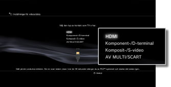
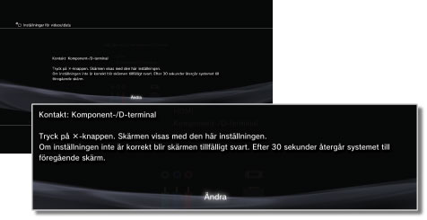
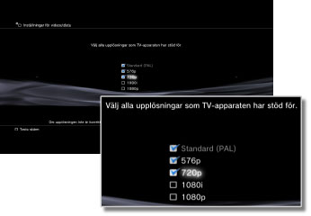
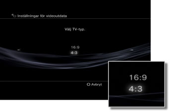
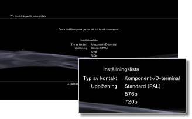

Inställningar för videoutdata
Justera systemets inställningar för videoutgång. Välj de bästa utgångsinställningarna för tv-apparaten som används.
1. |
Kontrollera vilken upplösning som fungerar med tv-apparaten.
Upplösning (videoläge) varierar beroende på tv-typ. Mer information finns i anvisningarna som medföljde tv-apparaten.
|
2. |
Välj  (Inställningar) > (Inställningar) >  (Skärminställningar). (Skärminställningar).
|
3. |
Välj [Inställningar för videoutdata].
|
4. |
Välj typ av kontakt på tv-apparaten.
Upplösningen (videoläge) varierar beroende på vilken typ av kontakt som används.

| *1 |
Alternativen för videoläge varierar beroende på i vilket land PS3™-systemet köpts. I Nordamerika, Asien och andra NTSC-regioner, visas videoläget 480i som [Standard (NTSC)]. I Europa och andra PAL-regioner, visas videoläget 576i som [Standard (PAL)]. Ytterligare information finns i anvisningarna som medföljde produkten.
|
| *2 |
Kontakttypen D-terminal används huvudsakligen i Japan. Upplösningarna D1 till D5 är enligt följande:
D5: 1080p / 720p / 1080i / 480p / 480i
D4: 1080i / 720p / 480p / 480i
D3: 1080i / 480p / 480i
D2: 480p / 480i
D1: 480i
|
| *3 |
S VIDEO är ett format som huvudsakligen används i Japan.
|
| *4 |
Euro-AV-kontakt medföljer endast de PS3™-systems om säljs i Europa.
|
| *5 |
AV MULTI är ett format som huvudsakligen används i Japan. Om [AV MULTI/SCART] har valts visas skärmen där du kan välja typ av utdatasignal.
|
| *6 |
SCART är ett format som huvudsakligen används i Europa. Om [AV MULTI/SCART] har valts visas skärmen där du kan välja typ av utdatasignal.
|
|
5. |
Ställ in 3DTV-visningsstorleken.
Ställ in så att systemet passar med storleken på den TV-skärm du använder.
Om TV:n du använder inte är en 3D-TV eller om du inte valde [HDMI] i steg 4, kommer skärmen inte att visas.
|
6. |
Ändra inställningarna för videoutgång.
Ändra upplösningen för videoutgång. Beroende på vilken kontakttyp som valts i steg 4 kanske den här skärmen inte visas.

|
7. |
Ange upplösningen.
Välj alla upplösningar som kan användas med TV:n som används. Video kommer automatiskt att sändas i högsta möjliga upplösning, från de upplösningar som valts, för innehållet du spelar upp.*
* Videoupplösningen väljs enligt följande prioritetsordning: 1080p > 1080i > 720p > 480p/576p > Standard (NTSC:480i/PAL:576i).
Om [Komposit-/S-video] väljs i steg 4 visas inte skärmbilden för val av upplösning.
Om [HDMI] valts kan du även välja automatisk anpassning av upplösningen (HDMI-enheten måste vara aktiverad). I de fallen kommer skärmen för val av upplösning inte att visas.

|
8. |
Ställ in TV-typen.
Välj typ för den TV som används. Ställs in när enbart SD-upplösning (NTSC:480p/480i, PAL: 576p/576i) ska matas ut, t ex då [Komposit-/S-video] eller [AV MULTI/SCART] valts i steg 4.

|
9. |
Kontrollera dina inställningar.
Bekräfta att den bild som visas har rätt upplösning för TV:n. Du kan gå tillbaka till en föregående skärmbild och revidera inställningarna genom att trycka på knappen  . .

|
10. |
Spara dina inställningar.
Inställningarna för videoutgång sparas på PS3™-systemet. Du kan fortsätta med att ställa in ljudutmatningens inställningar. Information om ljudutdata finns under (Inställningar) >  (Ljudinställningar) > [Audio Output Settings] i denna handbok. (Ljudinställningar) > [Audio Output Settings] i denna handbok.
|
Tips!
- Om inställningarna för videoutgång inte matchar dem som krävs för tv-apparaten som används kan skärmen bli svart när upplösningen ändras. Skärmen ska emellertid automatiskt återgå till den ursprungliga upplösningen efter en stund. Om skärmen är fortsatt svart i över 30 sekunder slår du av systemet. Slå sedan på systemet igen genom att hålla strömbrytaren på systemets framsida intryckt i minst fem sekunder. Inställningarna för videoutgång återställs automatiskt till standardupplösningen.
- Om en enhet som inte är kompatibel med HDCP-standarden (High-bandwidth Digital Content Protection) är ansluten till systemet med en HDMI-kabel, kan inte videofilm och/eller ljud gå ut från systemet.
- Copyright-skyddat innehåll på en Blu-ray Disc-skiva fungerar endast med 1080p med en HDMI-kabel som är ansluten till en enhet som är kompatibel med HDCP-standarden.
- När PS3™-systemet (CECH-3000/4000-serien) ansluts till en TV med en D-terminal-kabel, en komponentljud-/videokabel eller en multi-AV-kabel (en Sony Corporation-produkt), begränsas utmatning med hög upplösning att överensstämma med kopieringsskyddstekniken som används av Blu-ray™ (AACS (Advanced Access Content System)). BD-videoprogram (BD-ROM) och BD-skivor som spelats in med kopieringsskyddat videoinnehåll (t.ex. sändningsprogram) matas ut i 480i.
- Anslut systemet (CECH-4200-serien eller senare) med en HDMI-kabel för att mata ut BD-videoprogram (BD-ROM) och BD-skivor som spelats in med kopieringsskyddat videoinnehåll.